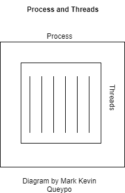

In this section, we will talk about similarities, differences of processes and threads and the advantages of using one over the other. Before reading, it is important to know what processes and threads are. This is explained in more detail in the earlier topics. To summarise, when a program has been loaded into memory together with resources needed for it to run, this is called a "process". Processes contain units of execution called "threads".
Processes can be single-threaded which means it contains only one thread. In this ocurrence, the process and thread are one in the same and only one thing is ocurring. Processes can also be multi-threaded which means the process contains two or more threads and are doing a lot of things at the concurrently. In this section we are going to talk about the key similarities and differences between processes and threads.
There are a couple of similarities betwwen processes and threads:
Processes and threads both share the same CPU (Central Processing Unit).
Only one thread can be active (running) just like processes.
Just like processes, the threads within a process execute sequentially (in a particular order).
Processes can become parent processes and create children processes. This is the same with threads where threads can become parent threads and create children threads.
When a process is blocked, another process can run. Threads also work this way also.
There are also some key differences between processesand threads:
Threads run in a shared memory space, while processes run in a memory space that is separate. These threads are all part of the same process. A shared memory allows various computer systems to access files stored in that shared memory space. The address space is shared but not the server. A centralised memory space does not exist.
Both the process and threads run simultaneously, giving the impression that both the process and threads run in parallel with each other. The threads guide the process to completing the task.
Processes consists of threads and cannot run without them. They would just be a group of code loaded into memory. Threads get the code from the process, checks the instruction written in it and executes it.
Processes contain a memory space contaning essential resources provided by the operating system with security and written code. The threads of a process share the same memory space and so it also shares it's resources. The threads have their own machine register and user's stack that was accessed from the shared memory space.
Processes are containers that consists of one or more units of executions while threads are the step in the execution it's sequence. Because of this, the operating system separately creates the memory of the process and threads.
Threads can only be run only one after the other. On the other hand, processes can be run in parallel in a multiprocesser system.
Threads are stored in the process and have no separate memory space. While Processes are stored in the RAM (Random Access Memory).
Lots of processes in the operating system can be connected to the same program. However, in most cases, only one thread may be the main control for the process that is running at the same time. In some operating systems, Processes are called tasks and threads are sometimes called LWP (lightweight process) because they carry out the instruction inside the process.